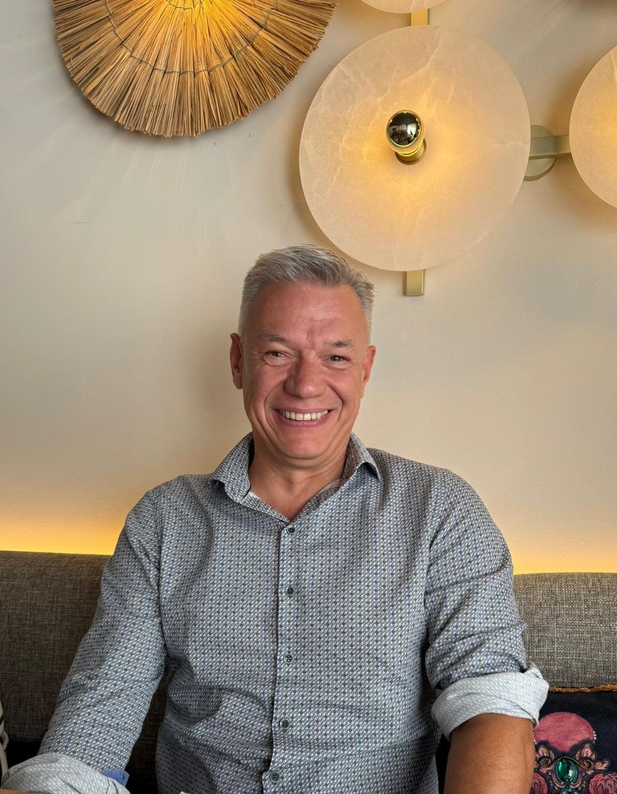

Nieuwe huisartsenpraktijk
Welkom bij praktijk Rhodeland
Vanaf begin november starten wij een nieuwe huisartsenpraktijk in Merelbeke-Melle. We kijken ernaar uit u te mogen verwelkomen.
We streven naar kwalitatieve, wetenschappelijke, toegankelijke en warme zorg, met een respectvolle en persoonlijke arts-patiëntrelatie als basis.
Lees eerst de informatie over consultaties.
Openingsuren
- Praktijk ma – vr · 08u00 – 18u00
- Secretariaat ma – vr · 08u00 – 12u00
- Dringend na 18u bel 1733
Het telefoonnummer is nog niet gekend. We maken dit binnenkort bekend.
Onze zorg
Waarvoor kan u bij ons terecht?
U kunt bij ons terecht vanaf de geboorte tot het levenseinde. We bieden hoogstaande zorg, telkens met aandacht voor uw noden als patiënt.
Acute zorg
Consultaties bij acute infecties, ook voor baby’s en jonge kinderen.
Chronische zorg
Opvolging van chronische aandoeningen zoals diabetes en hartfalen.
Preventie
Preventieve onderzoeken, uitstrijkjes, vaccinatiecontrole en jaarlijkse bloedafnames.
Cryotherapie
Behandeling van wratjes met cryotherapie.
Rookstop
Begeleiding bij rookstop, op uw eigen tempo.
Mentale ondersteuning
Psychologische ondersteuning wanneer het even moeilijker gaat.
Levenseinde
Gesprekken over het levenseinde en palliatieve zorg.
Onze praktijkverpleegkundige Katinka ondersteunt het team onder andere met zorgprotocollen, preventieprojecten en vaccinatiecampagnes. U kunt ook bij haar een afspraak maken.
Praktisch
Zo werkt het bij ons
Een afspraak maken
Consultaties zijn enkel op afspraak. Lees eerst waarop u moet letten, zo voorzien we voldoende tijd voor elke patiënt.
Naar de consultatiesEen huisbezoek aanvragen
Telefonisch aan te vragen, liefst voor 10u. Enkel bij patiënten die niet mobiel zijn en enkel in Merelbeke.
Alle praktische infoDringende hulp
Vanaf 18u ’s avonds of in het weekend bereikt u de huisartsenwachtdienst via het nummer 1733.
Buiten de urenOns team
De mensen achter Rhodeland
Een nieuwe praktijk met een warm en deskundig team.

Dr. Stefanie Vermandere
Huisarts
Dr. Roy Van Durme
Huisarts
Dr. Hendrik Bovendaerde
HuisartsKlaar om een afspraak te maken?
De agenda is momenteel nog niet beschikbaar. Binnenkort zullen patiënten hier wel een afspraak kunnen inboeken.